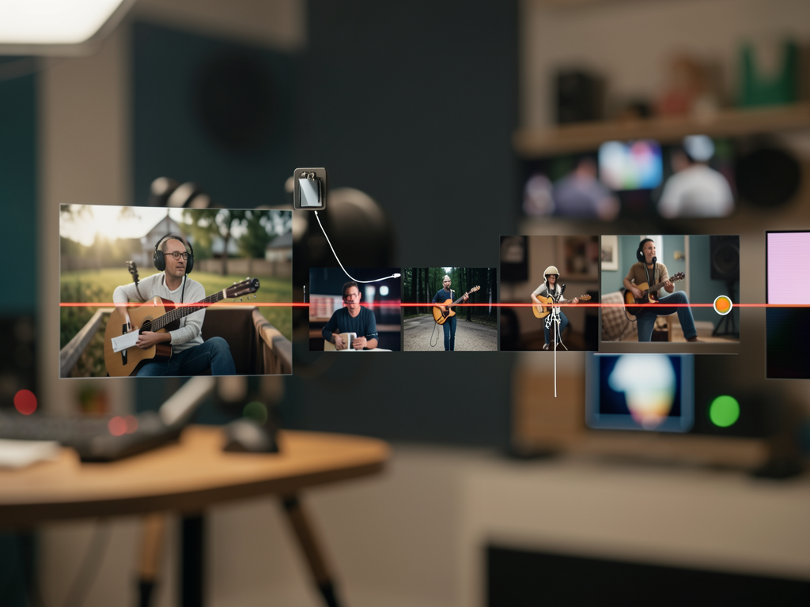
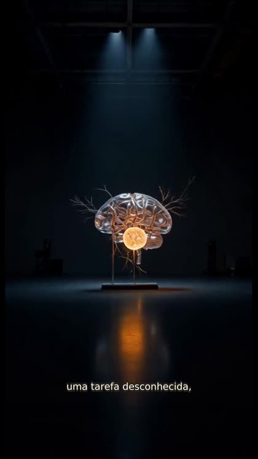
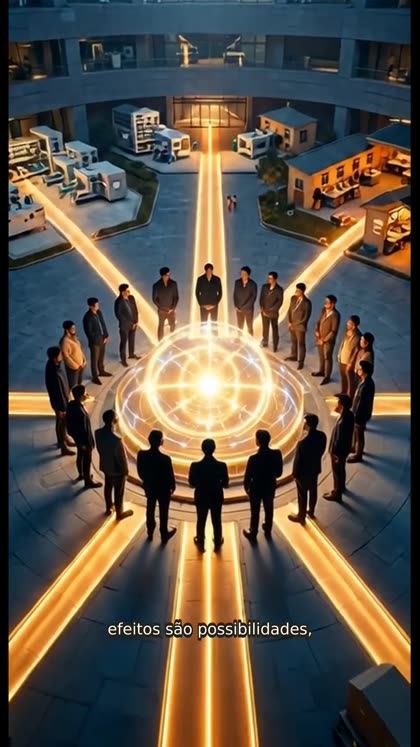

Create a script, voice, images, animations, captions, and an MP4 in a visual workflow that lets you review each step.

VideoSub turns a short topic or complete content into a vertical, square, or horizontal video, keeping you in control of the result.
Script, voice, image, motion, captions, and render are shown separately for review.
Codex OAuth creates the script, ElevenLabs produces the voice, and Agnes generates images and videos.
The interface and API run on your machine, with SQLite for projects and FFmpeg for final assembly.
Each output is preserved in the project and can be reviewed before the next operation.
The application uses local tools and credentials configured in an untracked file.
Node.js 22 or later and pnpm 10.
node --version pnpm --version
FFmpeg and FFprobe available on the PATH, including the subtitles filter.
ffmpeg -version ffprobe -version
Codex authenticated, with Agnes and ElevenLabs keys in the local environment.
codex login status # configure apps/server/.env
The commands below are the same ones used in the local version of the project.
At the repository root, install the workspace.
pnpm install --frozen-lockfileCopy the template and fill in the credentials without versioning the file.
cp .env.example apps/server/.env nano apps/server/.env
The script creates the build when needed and serves the interface on port 3333.
pnpm build ./start.sh # open http://localhost:3333
Enter a topic or content, choose a format and style, and generate the script.
Tema: explique o que é AGI Formato: 9:16 Estilo: editorial cinematográfico
Generate voice, images, and animations; review the scenes, then create captions and render.
# interface workflow
Roteiro → Voz → Imagens → Animar → Legendas → RenderizarUse the operational scripts included in the repository.
./atualiza.sh # validate, build, and restart ./stop.sh # stop the server
Frames from the end-to-end validated result with ElevenLabs voice, Agnes images and motion, and local editing.


The current setup prioritizes real production and local validation; the next phases expand operations and polish.